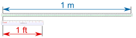
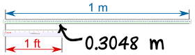
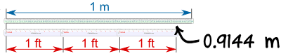

Conversion of Length
Note: we also have Conversion Charts, and a Unit Converter.
How to Convert Lengths
To convert length from one unit to another: multiply by the correct number.
Follow these steps:
- Find the correct conversion number (see Conversion Charts)
- Then multiply by that number
Let's look at a detailed example:
Example: Convert 3 feet into meters

When we put a 1-meter
ruler next to a
1-foot ruler, they look like this

Look closely and we see that the 1-foot ruler comes to exactly 0.3048 on the meter ruler
So, the conversion for feet to meters is: 1 ft = 0.3048 meters
To convert feet to meters, multiply by 0.3048
In fact we could put three 1 foot rulers next to each other like this:

Now you can see that 3 feet = 3 × 0.3048 meters = 0.9144 meters
So: 3 ft = 3 × 0.3048 m = 0.9144 m
Example: Convert 5 kilometers into miles
The conversion for kilometers into miles is:
1 km = 0.6214 mile (to 4 digits of accuracy)
So, the length conversion is "multiply by 0.6214":
5 × 0.6214 = 3.107
So: 5 km = 3.107 miles (to 3 decimal places)
More or Less?
Sometimes you can get the conversion the "wrong way around", so it is a good idea to think "will my answer be more or less?"
If you get the wrong answer, try dividing by the conversion number.
Example: You want to convert 8 meters into feet
Will the answer be more or less than 8? Feet are smaller than meters, so there should be more feet than meters.
The conversion is 1 ft = 0.3048 meters.
To the nearest 0.1 feet:
- try multiplying: 8 × 0.3048 = 2.5 feet (oops! that is smaller!)
- try dividing: 8 ÷ 0.3048 = 26.2 feet (that looks good)
Answer: 8 m = 8 ÷ 0.3048 = 26.2 ft